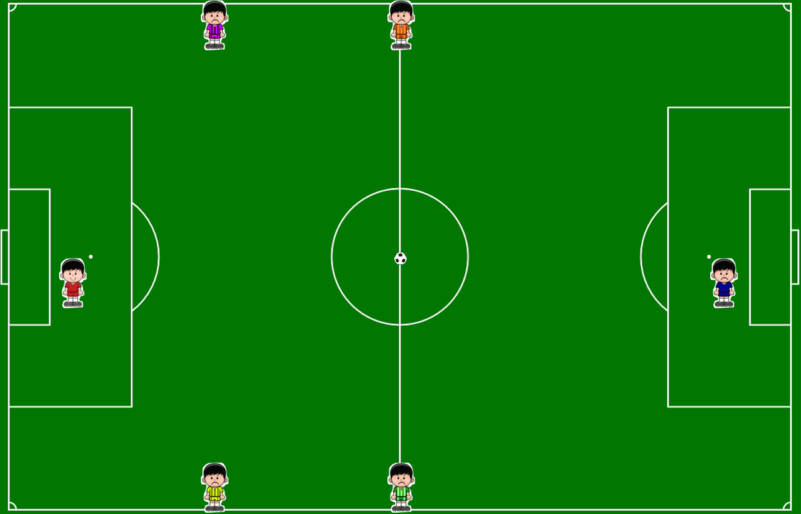

import pygame
import random
from pygame.sprite import Sprite
from math import fabs, hypot
from random import randint
from Player import Player
from Ball import Ball
from Player2 import Player2
from Player3 import Player3
from Player4 import Player4
from Player5 import Player5
from Player6 import Player6
import time
pygame.init()
pygame.mixer.init()
screen_size = (1295, 830)
screen = pygame.display.set_mode(screen_size)
background_image = pygame.image.load("field.png")
pygame.display.set_caption("Soccer Game!")
music = pygame.mixer.music.load("01 New Coat Of Paint.mp3")
pygame.mixer.music.play(-1, 0.0)
player = Player(screen)
player2 = Player2(screen)
player3 = Player3(screen)
player4 = Player4(screen)
player5 = Player5(screen)
player6 = Player6(screen)
ball = Ball(screen)
keys = {
"up": 273,
"down": 274,
"right": 275,
"left": 276
}
keys_down = {
"up": False,
"down": False,
"left": False,
"right": False
}
clock = pygame.time.Clock()
game_on = True
while game_on:
for event in pygame.event.get():
if (event.type == pygame.QUIT):
game_on = False
elif event.type == pygame.KEYDOWN:
if event.key == keys['up']:
keys_down['up'] = True
elif event.key == keys['down']:
keys_down['down'] = True
elif event.key == keys['left']:
keys_down['left'] = True
elif event.key == keys['right']:
keys_down['right'] = True
elif event.type == pygame.KEYUP:
if event.key == keys['up']:
keys_down['up'] = False
if event.key == keys['down']:
keys_down['down'] = False
if event.key == keys['right']:
keys_down['right'] = False
if event.key == keys['left']:
keys_down['left'] = False
if keys_down['up']:
if player.y > 0:
player.y -= player.speed
elif keys_down['down']:
if player.y < 744:
player.y += player.speed
if keys_down['left']:
if player.x > 0:
player.x -= player.speed
elif keys_down['right']:
if player.x < 1247:
player.x += player.speed
if player2.y > 0:
player2.y -= player2.speed
if player2.y < 744:
player2.y += player2.speed
if player2.x > 0:
player2.x -= player2.speed
if player2.x < 1247:
player2.x += player2.speed
if player3.y > 0:
player3.y -= player3.speed
if player3.y < 744:
player3.y += player3.speed
if player3.x > 0:
player3.x -= player3.speed
if player3.x < 1247:
player3.x += player3.speed
if player4.y > 0:
player4.y -= player4.speed
if player4.y < 744:
player4.y += player4.speed
if player4.x > 0:
player4.x -= player4.speed
if player4.x < 1247:
player4.x += player4.speed
if player5.y > 0:
player5.y -= player5.speed
if player5.y < 744:
player5.y += player5.speed
if player5.x > 0:
player5.x -= player5.speed
if player5.x < 1247:
player5.x += player5.speed
if player6.y > 0:
player6.y -= player6.speed
if player6.y < 744:
player6.y += player6.speed
if player6.x > 0:
player6.x -= player6.speed
if player6.x < 1247:
player6.x += player6.speed
distance_between = fabs(player.x - ball.x) + fabs(player.y - ball.y)
if distance_between < 32:
(ball.x,ball.y) = (player.x, player.y)
player2.has_ball = False
player3.has_ball = False
player4.has_ball = False
player5.has_ball = False
player6.has_ball = False
distance_between = fabs(player2.x - ball.x) + fabs(player2.y - ball.y)
if distance_between < 32:
(ball.x,ball.y) = (player2.x, player2.y)
player2.has_ball = True
dx = player2.x - player.x
dy = player2.y - player.y
dist = hypot(dx,dy)
dx = dx / dist
dy = dy / dist
if player2.has_ball == True:
player2.x += dx * player2.speed
player2.y += dy * player2.speed
else:
player2.x -= dx * player2.speed
player2.y -= dy * player2.speed
if player2.has_ball == False:
dx = player2.x - ball.x
dy = player2.y - ball.y
dist = hypot(dx,dy)
dx = dx / dist
dy = dy / dist
player2.x -= dx * player2.speed
player2.y -= dy * player2.speed
distance_between = fabs(player3.x - ball.x) + fabs(player3.y - ball.y)
if distance_between < 32:
(ball.x,ball.y) = (player3.x, player3.y)
player3.has_ball = True
dx = player3.x - player.x
dy = player3.y - player.y
dist = hypot(dx,dy)
dx = dx / dist
dy = dy / dist
if player3.has_ball == True:
player3.x += dx * player3.speed
player3.y += dy * player3.speed
else:
player3.x -= dx * player3.speed
player3.y -= dy * player3.speed
if player3.has_ball == False:
dx = player3.x - ball.x
dy = player3.y - ball.y
dist = hypot(dx,dy)
dx = dx / dist
dy = dy / dist
player3.x -= dx * player3.speed
player3.y -= dy * player3.speed
distance_between = fabs(player4.x - ball.x) + fabs(player4.y - ball.y)
if distance_between < 32:
(ball.x,ball.y) = (player4.x, player4.y)
player4.has_ball = True
dx = player4.x - player.x
dy = player4.y - player.y
dist = hypot(dx,dy)
dx = dx / dist
dy = dy / dist
if player4.has_ball == True:
player4.x += dx * player4.speed
player4.y += dy * player4.speed
else:
player4.x -= dx * player4.speed
player4.y -= dy * player4.speed
if player4.has_ball == False:
dx = player4.x - ball.x
dy = player4.y - ball.y
dist = hypot(dx,dy)
dx = dx / dist
dy = dy / dist
player4.x -= dx * player4.speed
player4.y -= dy * player4.speed
distance_between = fabs(player5.x - ball.x) + fabs(player5.y - ball.y)
if distance_between < 32:
(ball.x,ball.y) = (player5.x, player5.y)
player5.has_ball = True
dx = player5.x - player.x
dy = player5.y - player.y
dist = hypot(dx,dy)
dx = dx / dist
dy = dy / dist
if player5.has_ball == True:
player5.x += dx * player5.speed
player5.y += dy * player5.speed
else:
player5.x -= dx * player5.speed
player5.y -= dy * player5.speed
if player5.has_ball == False:
dx = player5.x - ball.x
dy = player5.y - ball.y
dist = hypot(dx,dy)
dx = dx / dist
dy = dy / dist
player5.x -= dx * player5.speed
player5.y -= dy * player5.speed
distance_between = fabs(player6.x - ball.x) + fabs(player6.y - ball.y)
if distance_between < 32:
(ball.x,ball.y) = (player6.x, player6.y)
player6.has_ball = True
dx = player6.x - player.x
dy = player6.y - player.y
dist = hypot(dx,dy)
dx = dx / dist
dy = dy / dist
if player6.has_ball == True:
player6.x += dx * player6.speed
player6.y += dy * player6.speed
else:
player6.x -= dx * player6.speed
player6.y -= dy * player6.speed
if player6.has_ball == False:
dx = player6.x - ball.x
dy = player6.y - ball.y
dist = hypot(dx,dy)
dx = dx / dist
dy = dy / dist
player6.x -= dx * player6.speed
player6.y -= dy * player6.speed
screen.blit(background_image, [0,0])
player2.draw_me()
player3.draw_me()
player4.draw_me()
player5.draw_me()
player6.draw_me()
player.draw_me()
ball.draw_me()
pygame.display.flip()
